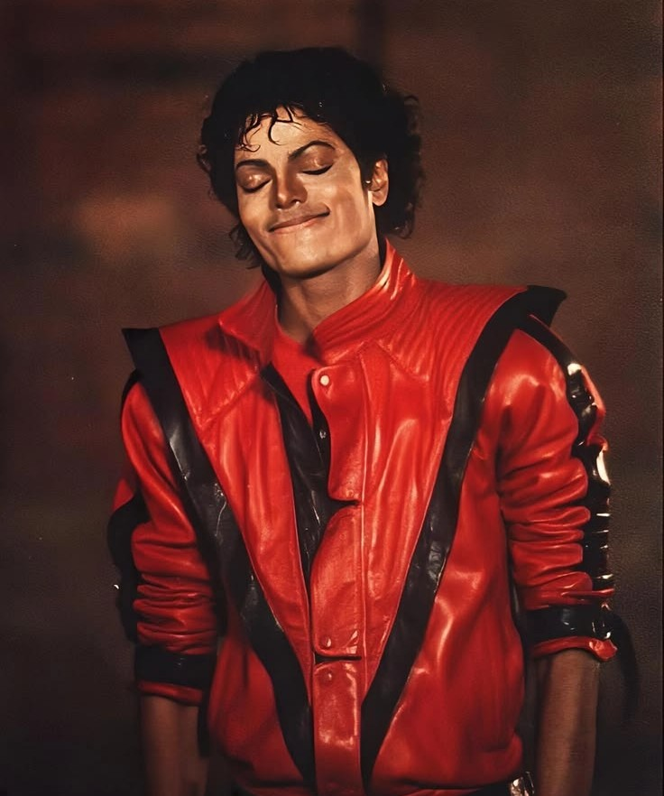

Thriller (1982)

Canción que da nombre al álbum más vendido de la historia. Su video musical, de casi 14 minutos, se considera un cortometraje que cambió la industria. Escrita por Rod Temperton y producida por Quincy Jones, mezcla pop, funk y un ambiente de cine de terror.
Datos de la canción
| FICHA TÉCNICA | ||||||||||||||||
|---|---|---|---|---|---|---|---|---|---|---|---|---|---|---|---|---|
|
La icónica voz cavernosa que recita el monólogo al final de la canción pertenece al legendario actor de cine de terror Vincent Price, quien grabó toda su parte en apenas dos tomas en el estudio.
Escúchala en Spotify
Preguntas Frecuentes:
Fue escrita por Rod Temperton, un compositor británico, y producida por Quincy Jones para el álbum del mismo nombre.
El director John Landis, conocido por su trabajo en el cine de terror y comedia, dirigió el video que se estrenó en diciembre de 1983.
Pertenece al actor Vincent Price, famoso por sus papeles en películas de terror.